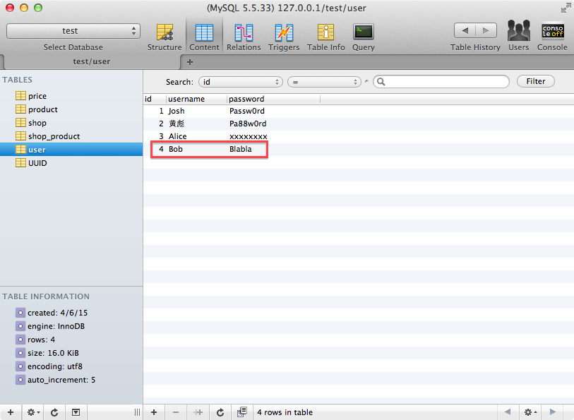

事务具有以下四个基本特征
| Name | Description |
|---|---|
| Atomic（原子性） | 事务中包含的操作被看做一个逻辑单元，这个逻辑单元中的操作要么全部成功，要么全部失败。 |
| Consistency（一致性） | 只有合法的数据可以被写入数据库，否则事务应该将其回滚到最初状态。 |
| Isolation（隔离性） | 事务允许多个用户对同一个数据进行并发访问，而不破坏数据的正确性和完整性。 同时，并行事务的修改必须与其他并行事务的修改相互独立。 |
| Durability（持久性） | 事务结束后，事务处理的结果必须能够得到固化。数据库肯定是要被广大客户所共享访问的， 那么在数据库操作过程中很可能出现以下几种不确定情况。 |
| Name | Description |
|---|---|
| 脏读 | 一事务对数据进行了增删改，但未提交，有可能回滚， 另一事务却读取了未提交的数据，允许脏读取，但不允许更新丢失。 如果一个事务已经开始写数据，则另外一个事务则不允许同时进行写操作， 但允许其他事务读此行数据 |
| 不可重复读 | 一事务对数据进行了更新或删除操作，另一事务两次查询的数据不一致 |
| 幻读 | 一事务对数据进行了新增操作，另一事务两次查询的数据不一致 |
数据库系统有四个隔离级别
| 隔离级别 | 隔离级别的值 | 导致的问题 |
|---|---|---|
| Read-Uncommitted | 0 | 导致脏读 |
| Read-Committed | 1 | 避免脏读，允许不可重复读和幻读 |
| Repeatable-Read | 2 | 避免脏读，不可重复读，允许幻读 |
| Serializable | 3 | 串行化读，事务只能一个一个执行，避免了脏读、不可重复读、幻读。 执行效率慢（我遇到过一种情况，用时是隔离级别1的30倍），使用时慎重 |
| 隔离级别 | 脏读 | 不可重复读 | 幻读 |
|---|---|---|---|
| 未提交读 | 是 | 是 | 是 |
| 已提交读 | 否 | 是 | 是 |
| 可重复读 | 否 | 否 | 是 |
| 可序列化 | 否 | 否 | 否 |
隔离级别越高，越能保证数据的完整性和一致性，但是对并发性能的影响也越大。
大多数的数据库默认隔离级别为 Read Commited，比如 SqlServer、Oracle
少数数据库默认隔离级别为：Repeatable Read 比如： MySQL InnoDB
参考文档：数据库事物隔离级别通俗理解
Spring 事务的隔离级别
| Key | Description |
|---|---|
| ISOLATION_DEFAULT | 这是一个 PlatfromTransactionManager 默认的隔离级别，使用数据库默认的事务隔离级别。另外四个与 JDBC 的隔离级别相对应。 |
| ISOLATION_READ_UNCOMMITTED | 这是事务最低的隔离级别，它充许令外一个事务可以看到这个事务未提交的数据。这种隔离级别会产生脏读，不可重复读和幻像读。 |
| ISOLATION_READ_COMMITTED | 保证一个事务修改的数据提交后才能被另外一个事务读取。另外一个事务不能读取该事务未提交的数据。 |
| ISOLATION_REPEATABLE_READ | 这种事务隔离级别可以防止脏读，不可重复读。但是可能出现幻像读。它除了保证一个事务不能读取另一个事务未提交的数据外，还保证了避免下面的情况产生(不可重复读)。 |
| ISOLATION_SERIALIZABLE | 这是花费最高代价但是最可靠的事务隔离级别。事务被处理为顺序执行。 |
Spring 事务的传播属性
| Key | Description |
|---|---|
| PROPAGATION_REQUIRED | 支持当前事务，如果当前没有事务，就新建一个事务。这是最常见的选择，也是 Spring 默认的事务的传播。 |
| PROPAGATION_REQUIRES_NEW | 新建事务，如果当前存在事务，把当前事务挂起。 |
| PROPAGATION_SUPPORTS | 支持当前事务，如果当前没有事务，就以非事务方式执行。 |
| PROPAGATION_MANDATORY | 支持当前事务，如果当前没有事务，就抛出异常。 |
| PROPAGATION_NOT_SUPPORTED | 以非事务方式执行操作，如果当前存在事务，就把当前事务挂起。 |
| PROPAGATION_NEVER | 以非事务方式执行，如果当前存在事务，则抛出异常。 |
以下解释的场景都是基于 ServiceA.methodA() 里调用 ServiceB.methodB()
注意: ServiceA.methodA() 里调用 ServiceA.methodB() 时，methodB() 的 propagation 无效，因为 Spring 的 AOP 是代理的方式，这个时候 methodB() 和 methodA() 都是同一个对象的方法，所以不能对其作切面。
PROPAGATION_REQUIRED
加入当前正要执行的事务不在另外一个事务里，那么就起一个新的事务。
比如说，ServiceB.methodB() 的事务级别定义为 PROPAGATION_REQUIRED。
执行 ServiceA.methodA() 时它已经起了事务，这时调用 ServiceB.methodB()，ServiceB.methodB() 看到自己已经运行在 ServiceA.methodA() 的事务内部，就不再起新的事务。
假如 ServiceB.methodB() 运行的时候发现自己没有在事务中，他就会为自己分配一个事务。
这样，在 ServiceA.methodA() 或者在 ServiceB.methodB() 内的任何地方出现异常，事务都会被回滚。
PROPAGATION_REQUIRES_NEW
比如我们设计 ServiceA.methodA() 的事务级别为 PROPAGATION_REQUIRED，ServiceB.methodB() 的事务级别为 PROPAGATION_REQUIRES_NEW。
那么当执行到 ServiceB.methodB() 的时候，ServiceA.methodA() 所在的事务就会挂起，ServiceB.methodB() 会起一个新的事务，等待 ServiceB.methodB() 的事务完成以后，它才继续执行。
他与 PROPAGATION_REQUIRED 的事务区别在于事务的回滚程度了。因为 ServiceB.methodB() 是新起一个事务，那么就是存在两个不同的事务。如果 ServiceB.methodB() 已经提交，那么 ServiceA.methodA() 失败回滚，ServiceB.methodB() 是不会回滚的。如果 ServiceB.methodB() 失败回滚，如果他抛出的异常被 ServiceA.methodA() 捕获，ServiceA.methodA() 事务仍然可能提交。
PROPAGATION_SUPPORTS
如果当前在事务中，即以事务的形式运行，如果当前不再一个事务中，那么就以非事务的形式运行
PROPAGATION_MANDATORY
必须在一个事务中运行。也就是说，他只能被一个父事务调用。否则，他就要抛出异常
PROPAGATION_NOT_SUPPORTED
当前不支持事务。比如 ServiceA.methodA() 的事务级别是 PROPAGATION_REQUIRED，而 ServiceB.methodB() 的事务级别是 PROPAGATION_NOT_SUPPORTED。
当执行到 ServiceB.methodB() 时，ServiceA.methodA() 的事务挂起，而他以非事务的状态运行完，再继续 ServiceA.methodA() 的事务。
PROPAGATION_NEVER
不能在事务中运行。假设 ServiceA.methodA() 的事务级别是 PROPAGATION_REQUIRED，而 ServiceB.methodB() 的事务级别是 PROPAGATION_NEVER ，那么 ServiceB.methodB() 就要抛出异常了。
下面我们将举例使用事务的方式更新用户的密码，当秘密的长度小于 5 时不更新。
1. 新建事务配置
resource/config/spring-transaction.xml 用来定义 transactionManager。
1 |
|
2. 加载事务配置
在 web.xml 中 SpringMVC 的 DispatcherServlet 里加载加载事务配置，事务和 Servlet Context 有关，不能在 context-param 中配置后用 listenter 加载。
1 | <servlet> |
3. 在 User mapper xml 增加更新密码语句
<update id="updatePassword" ... > 是新增加的。
1 |
|
4. 在 User mapper interface 增加更新密码函数
updatePassword() 函数是新增加的。
1 | package com.xtuer.mapper; |
5. 在 Controller 增加更新密码的函数
updatePassword() 函数是新增加的，事务使用 annotation @Transactional。
1 | package com.xtuer.controller; |
6. 测试
6.1. 数据库里的数据

6.2. 访问 http://localhost:8080/user/4/password/abc
数据库里的数据
更新密码失败，因为新密码 abc 的长度小于 5
6.3 访问 http://localhost:8080/user/4/password/NestedServletException
数据库里的数据
更新密码成功，因为新密码 NestedServletException 的长度大于 5
Spring 事务的回滚策略
默认任何 RuntimeException 将触发事务回滚，但是任何 checked Exception 将不触发事务回滚，可以通过配置修改该规则，例如
@Transactional(noRollbackFor=RuntimeException.class)
@Transactional(RollbackFor=Exception.class)